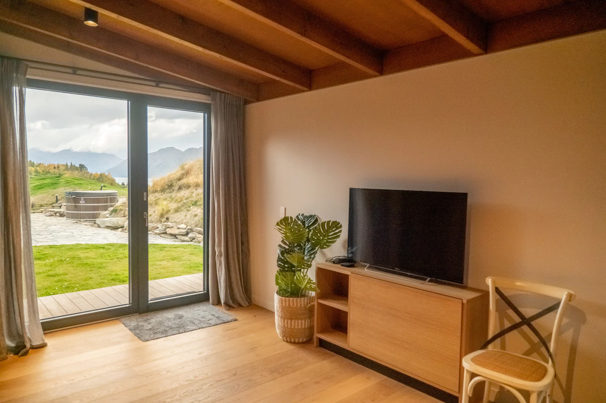
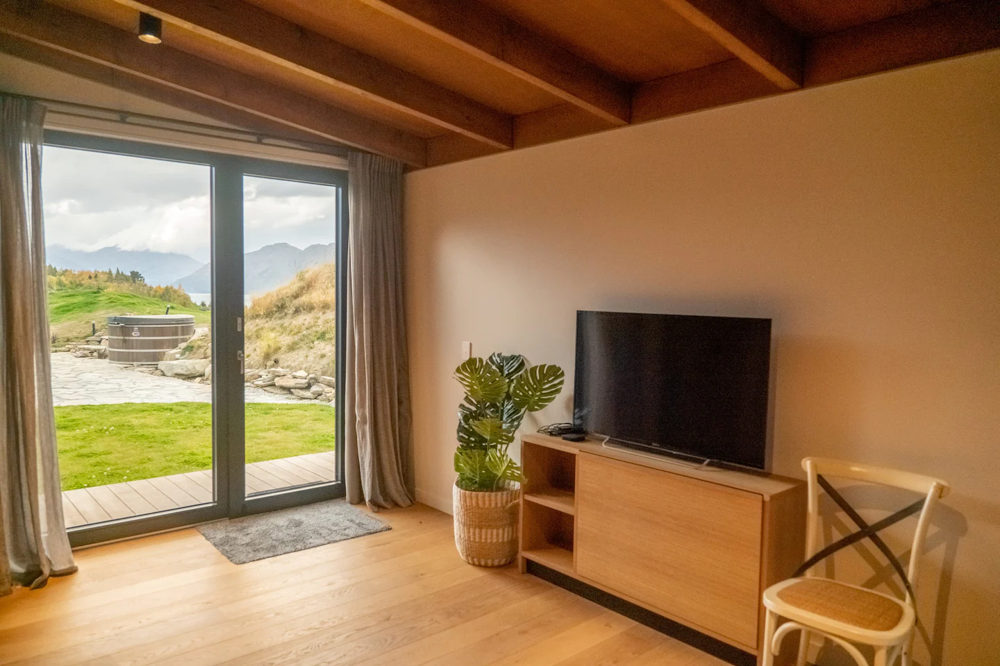

Your Host

Hi, I'm Gavin
Wanaka is my favourite place to visit, relax, and reconnect with nature. With some of the most stunning natural landscapes on your doorstep, nature welcomes you with open arms. Depending on the season amazing hiking, cycling, skiing, and swimming awaits. We can't wait to welcome you to our paradise!
Our Location
Maps Data: Google, ©2022 CNES / Astrium, Maxar Technologies
 
